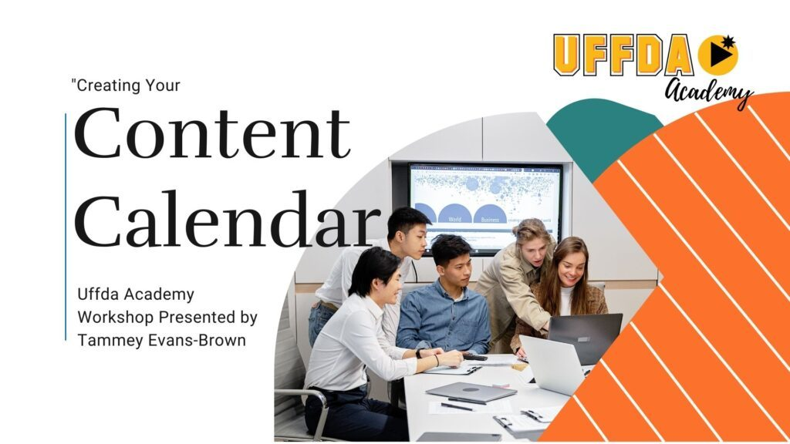
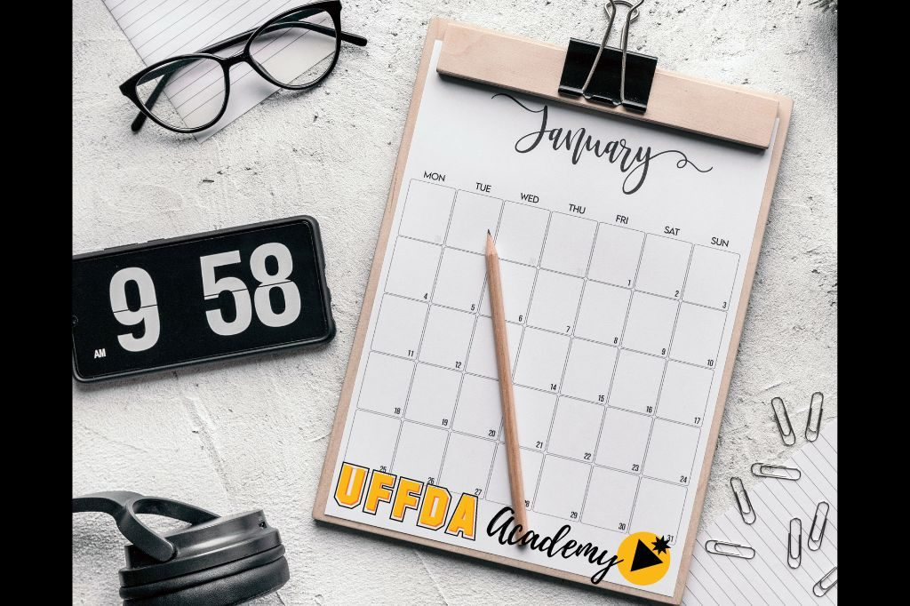
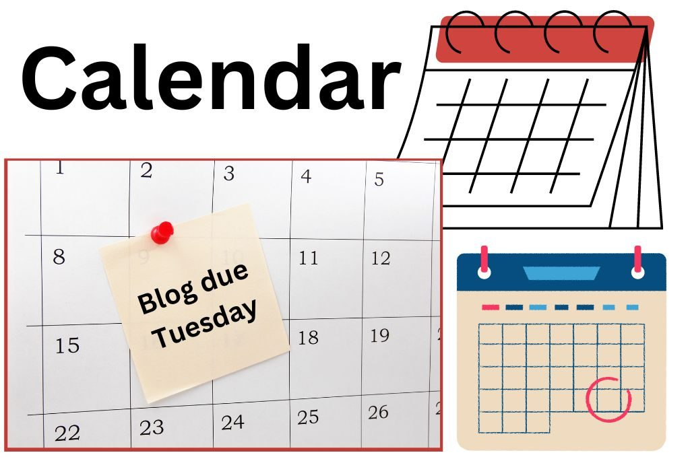
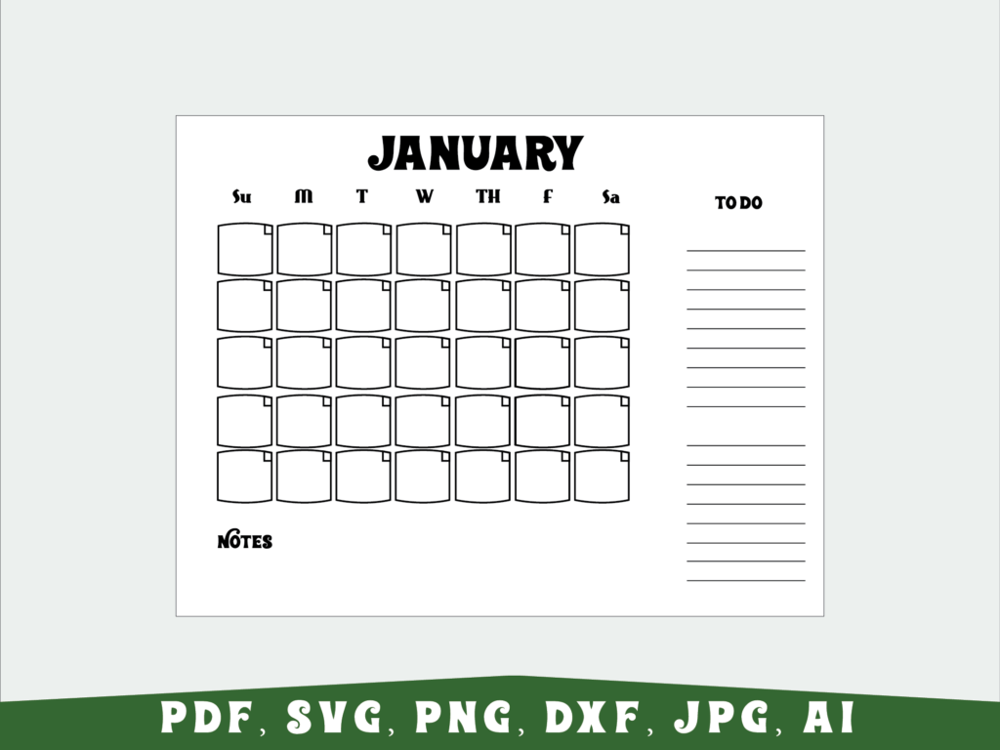

What is a Content Calendar?

A content calendar is a great way to stay organized and plan out your content in advance. It's a tool that allows you to map out the topics, mediums, and dates you plan to use to create and distribute content.
Plan Ahead, Make Deadlines
By having a content calendar, you can ensure that you are regularly creating and sharing content that is relevant to your audience.
Additionally, it allows you to plan ahead and ensure that you don't miss any deadlines.
Techie answer: A tool to help keep you organized and focused on what you want to share.
Non-techie answer: A calendar of topics and themes to use as a guideline when creating social media and blog posts.
5 Tips for Content Creation
There are 5 easy tips to help you create your content calendar.
- Create a consistent posting schedule
- Brainstorm ideas before you sit down to your calendar to offer more choices
- Understand what content resonates with your audience
- Tailor your content to your audience
- Keep your content fresh and created by you

I recommend creating your content calendar on paper to allow easy viewing, changes, and updates, and to clearly see what you have planned for the month.
Be sure to include personal and professional dates that impact your calendar.
Any calendar will work. It just needs to be accessible and easy to read.

Have you ever worked for hours on a blog post only to find out later you'd already written about that?
Keeping a list of topics and categories is a great way to easily recall what you've written about, and it also makes it easy to link back to that information from other sources.
Brainstorm Ideas
Brainstorm ideas for your posts, shares, and blogs. What do you want your audience to get from your sharing? Keep a list of your categories to help keep you focused.
Do you belong to a networking group? This is a great time to get together with other like-minded people and brainstorm content ideas. It's OK if you all end up with a few of the same ideas on your calendars, as you'll each create unique content for your audiences.
Recap
A content calendar is simply a planning tool to keep you on track for what you want to share and to get it scheduled to avoid scattered posting.
Brainstorm and fill in your calendar. The calendar helps you plan, focus, and see what you have coming up and what you've shared in the past.
Keep a list of previous blog posts, vlogs, and podcasts to make it easier to link back to related content. This gives your current content a better ranking with search engines (like Google).
When you feel inspired to write or create, look at your content calendar for upcoming topics and create based on what's on there.
BOOM! Easy-peasy content creation.
Need help brainstorming ideas or filling in your calendar? Bring it to the Impossible Task Squad!
Want help with this?
Learn at your own pace with a short class, or get one-on-one help with your own project.
Need help creating your logo? DesignsThatDo.com is your answer!